The clock your Toyota should have come with.
A drop-in clock replacement that brings 90s Toyota trucks into the 21st century: engine codes, gauges, GPS and logging.
ALL THE DATA, ALL THE TIME
A 90s Toyota says almost nothing until something breaks. OVERCLOCK watches everything and flags trouble early.
- OBD2 codes, decoded. Constant monitoring. Clear answers.Requires the Bluetooth OBD2 dongle. Model year 1996 and newer.
- Quiet until it matters. Full-screen alerts for the problems that can't wait.
- Every drive, on record. Full drive logging, every second, stored in the dash.
- Integrated GPS. Logs location, speed and heading every second.
- Plugs into the factory connector. No cutting, no splicing.
- Fully configurable. Add probes and senders, or keep it simple. Every feature on or off.
LIVE DEMO
Actual firmware.
FACTORY FIT
No dash modifications. Factory mounting points, factory connector. Swap the stock clock back in any time.
- Wires to run. Knob and GPS antenna. Everything else is optional: up to 4 temp probes, trans temp, oil or fuel pressure senders.
- Bluetooth OBD2 dongle included. Plug it in once and leave it.
- One knob does it all. One-hand control, eyes on the road.
- Flush-mount the knob. One drilled hole for a factory feel. Prefer no holes? Included housing with 3M VHB tape.
- Each truck, its own fit.
- Expandable to meet your needs. One temp probe or four. Add trans temp or oil pressure. Every reading logged.


ONE KNOB, EVERY PAGE
Turn to move between pages. Click to open the thing you are looking at. Hold to go back. That is the whole manual. No touchscreen on purpose: the knob sits where your hand already rests, your eyes stay on the road, and the screen stays for the information. Why not a touchscreen?
Gauges
4 live readings, fully customizable.
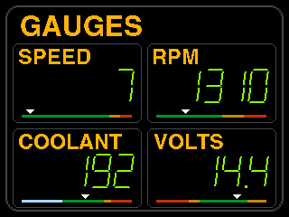
One gauge, big
Full-screen gauge, color-coded.
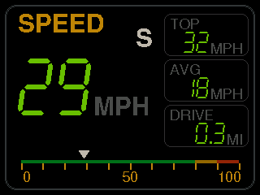
Health
Spots worsening trends days or weeks before a failure.
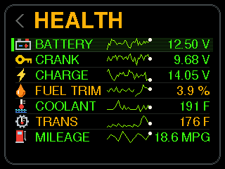
Temperatures
Up to 4 temperature probes placed where you need them.
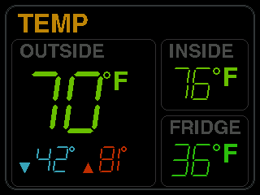
Weather
Barometer trend and storm alert.
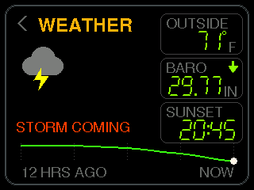
Tilt
Inclinometer. Live pitch and roll.
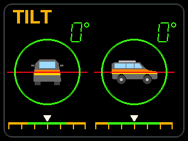
Camp
Truck leveling to the inch, for a restful night in your rooftop tent or in-cab camp setup.
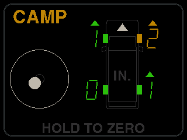
Solar
Monitor your solar setup right from the OVERCLOCK. Record trends and keep tabs on your system. No need for a 3rd screen.
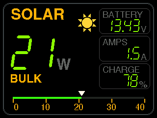
Trips and fuel
Trip odometer, live MPG that gets more accurate over time. Enhanced fuel logging keeps track of fuel spend and efficiency.
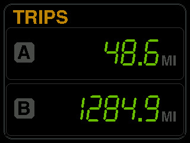
Starter battery
Starter battery health.
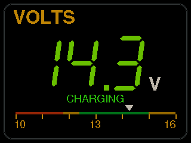
The retro clock
For when you want the original.
The sky
Live GPS sky view.
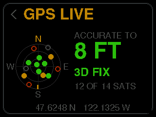
Codes
A better OBD2 scanner. Made for everyone.
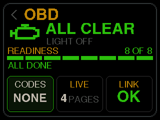
A code, taking the screen
Serious code, full screen.
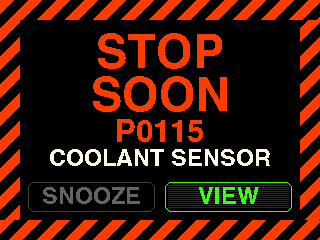
Overheat
Overheat alert.
Fridge warm
Fridge warm alert.
Towing
Towing temps.
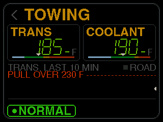
Starter battery
Battery and alternator health.
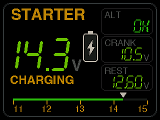
Records
24 unique records show your best, longest, highest and more.
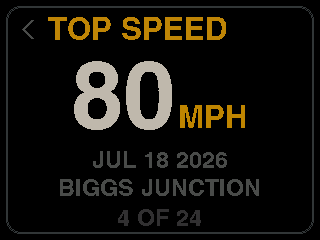
States
Every state, logged.
0 to 60
Launch timer.
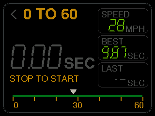
Stopwatch
It’s a clock… it should to “clock things.”
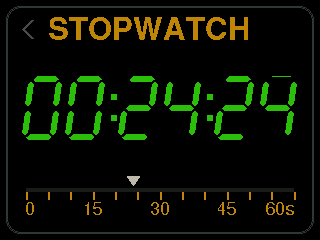
Games
Bored? Play a quick game.
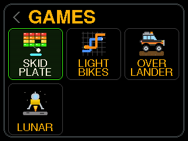
Apps
Apps menu.
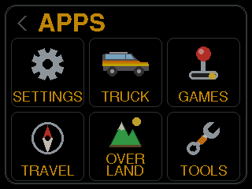
Settings
Full settings menu.
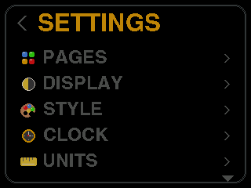
YOUR CLOCK, YOUR WAY
2 fonts, 10 colors, 12 or 24-hour, four configurable corners.
- Fully customizable corner widgets.
- Presets, ready to go. Five one-click layouts.
- Or save your own. Up to three custom layouts, saved by name.
- Gauges that color themselves. Dynamic gauge color changes based on value.
- Guided setup.
FULL ENGINE DIAGNOSTICS
Full engine diagnostics, running every drive.
- Real-time trouble codes. Pending codes caught early. Freeze frame for every code, not just the last.
- Spelled out. Full code library, explained.
- Where to start. A troubleshooting guide for every code.
- Keep driving, or pull over? Every code ranked by severity.
- The moment it happened, saved. Freeze frame on every code.
- Live gauges. Every engine reading, live.
- Transmission temperature. Transmission temp from OBD2 on 1999 and newer, or displayed from the optional trans temp sender.
- Oil or fuel pressure, live and logged. Optional sender.
- Smog check and code clearing.
Live engine data and trouble codes require the Bluetooth OBD2 dongle and a 1996 or newer truck.
ALERTS
Full-time monitoring, full-screen alerts.
- Overheating. Real coolant temp, real warning.
- Transmission temperature. Warns before damage.
- Over-voltage. Regulator failure alert.
- Not charging. Alternator failure.
- Serious engine codes. Critical codes, full screen.
- Low oil pressure. With the optional sender: a stop-engine alert.
- Slow trouble. Catches a slow decline weeks early.
- Fridge and freezer. Custom temperature alerts.
- Towing. Alerts for trans and coolant.
TEMPERATURES, ANYWHERE YOU WANT THEM.
Up to four named probes, plus transmission temperature.
- Dynamic layout. The TEMP page fits the probes installed. No blank spaces.
- Fridge and freezer alerts. Customizable limits.
- Trans temp. Dedicated sender input.
- Logged with everything else. 24-hour probe history.
- Simple to add. One screw terminal for every probe.
- Which probes and senders. See the senders it supports today.
INTEGRATED GPS
Standalone GPS. No phone, no subscription.
- Always the right time. Time and time zone from GPS.
- GPS ground speed. Accurate on any truck.
- Every real mile. GPS and engine data cross-checked for accurate mileage.
- Altitude, climb and grade. Barometer plus GPS, with total climb and descent.
- Auto dimming. With the headlights, or at local sunset and sunrise.
- Fuel stop detection. Prompts a fill log after you fill up.
- GPS-based border crossing alerts.
- Places and home. Saved places and trip summaries.
EVERY SECOND, LOGGED
A black box for your truck. Every alert, and data point logged.
- Every second of every drive. 70+ readings, every second.
- Every start, every code, every tank. Pre-start voltage and crank dip. Every code with freeze frame. Real gallons against real miles.
- Parked logging. Wakes on a schedule you set to keep logging trends. Adds about 2 to 5 percent to the truck's normal parked draw. Low-voltage cutoff means it won't drain your battery.
- Room for decades. 8 GB holds about 20 years at 1,500 miles a month. Takes up to a 32 GB card.
- Spreadsheet-ready logs. Graph anything against anything.
- Your drives on a map. Export any drive as KML or GPX for Google Earth or any map app.
- Privacy first. One switch turns off location logging.
From real OVERCLOCK logs
- 1,482miles logged
- 1.2Mreadings
- 80starts measured
- 0.04%dash miles vs GPS
FUEL, TRACKED
Engine-measured mpg that learns from every fill.
- Live MPG. Accuracy improves over time.
- This tank, last tank, range. Tank-by-tank mpg and range.
- Fuel station memory. GPS-based fill-up reminders.
- Learns from every fill. Self-calibrating fuel math.
- Cost over time. Every fill saved: date, miles, gallons, price. Cost per month, trip or mile.
PHONE CONNECTED
Settings, updates and downloads from your phone over Wi-Fi.
- Your files. Calendar of recorded days. Pick days, download one file.
- Live data. Monitor all reported data points live.
- Engine codes. Full code tools on the phone.
- Photos. Send pictures to the slideshow.
- Updates over Wi-Fi. Verified before install.
- Setup made easy. Wi-Fi, state map, fuel stations, solar and Bluetooth batteries, set up from the phone.
Drives
Drives by date.

Live
Live graphs of any reading.

Codes
Codes, explained.

Photos
Send your own pictures to the clock's slideshow.

Dates
Birthdays, anniversaries and US holidays, on the clock on the day.

Firmware
Pick the file, send, verified before install.

Setup
Networks, solar, batteries, maps and data.

Networks
Saved networks.

Solar and batteries
Pair controllers, shunts and batteries. Combine into one bank.

Maps and data
Border map and fuel stations.

Dash log
Support log.

OVERLAND READY
The features that matter once the engine's off, and the solar gear you already own, right on your dash.
- Solar and house battery. Watts in, amps out, charge left.
- Several batteries, one bank. Link two or more Bluetooth batteries and the dash shows them as one big battery.
- Fridge and freezer watch. Food-safety alerts.
- Camp level. Wheel-by-wheel leveling.
- Weather coming. Built-in barometer, overnight watch.
- Sunrise and sunset. Location-exact times.
- Starter battery health. Checked every start.
- More than gauges. Timers, records, games and more.
PURPOSE-BUILT HARDWARE
A fully custom PCB, designed in house and purpose-built for the job.
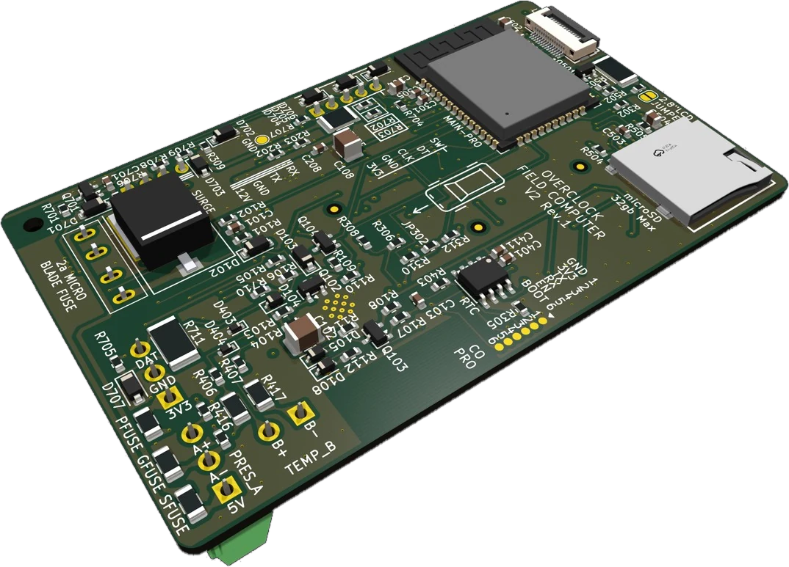
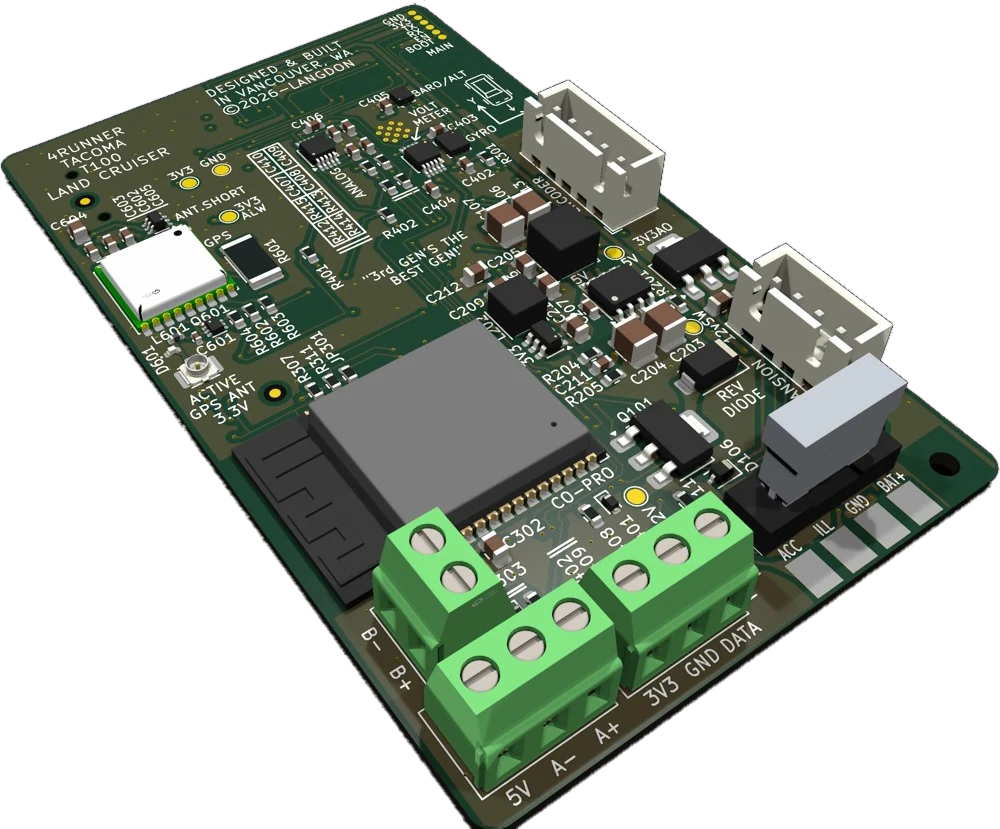
- Built to survive. Every component chosen for truck life.
- Two processors for smooth, steady performance.
- A bright, sharp screen. Readable in sun, dim at night.
- Built-in barometer. Weather trends, storm warnings, GPS-checked altitude.
- Precision voltmeter. Resting, charging and cranking voltage, accurately measured.
- Integrated gyro and accelerometer. Precise camp leveling and accurate off-road tilt.
- Protected. Fused, surge-protected, reverse-polarity safe.
- Designed and tested in Washington State.
EXPANDABLE
Start simple. Add more later.
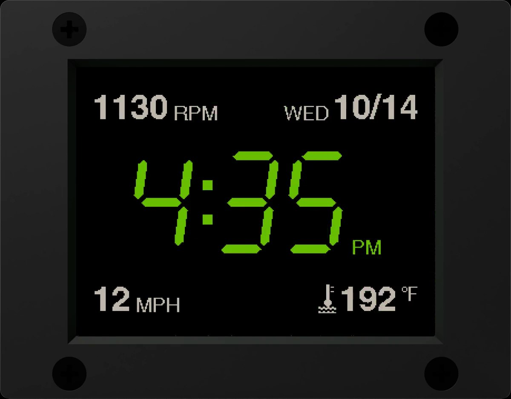
- As little or as much as you want. Your setup, your way.
- Add sensors over time. Up to four probes, trans temp and oil or fuel pressure. Each appears as a gauge and in the logs once connected. See the senders it supports today.
- Add solar when you're ready. Pair and go.
- Easy Wi-Fi updates from your phone. New features added frequently.
- Room to expand. Expansion port allows for future add-ons.
WHAT IT WON'T DO
(no intro line)
- Read-only. Never tunes or reprograms.
- No cloud, no account, no subscription.
- No location logging unless you want it. One switch.
- No live engine data before 1996. Engine data from OBD2 requires a dongle.
- Won't drain your battery. Low-battery cutoff built in. The numbers.
- Not a mechanic. A head start.
WANT ONE?
OVERCLOCK is finished. Designed, built, and tested on the road. The first batch is small and limited, and we're starting with the people who reach out first.
Add your truck to the list. We reply personally.
How much is it? Estimated $300 to $350. More on price
Prefer email? hello@overclockdash.com